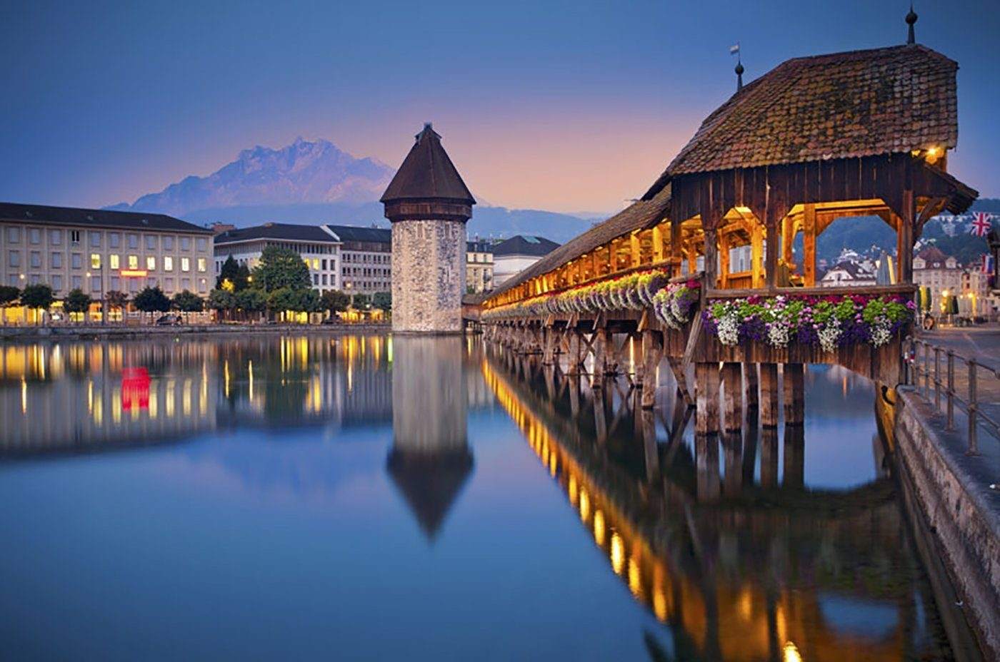
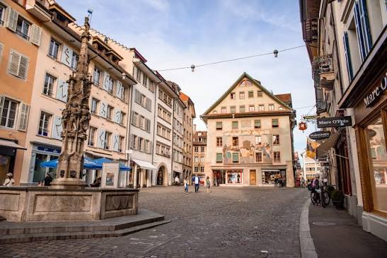
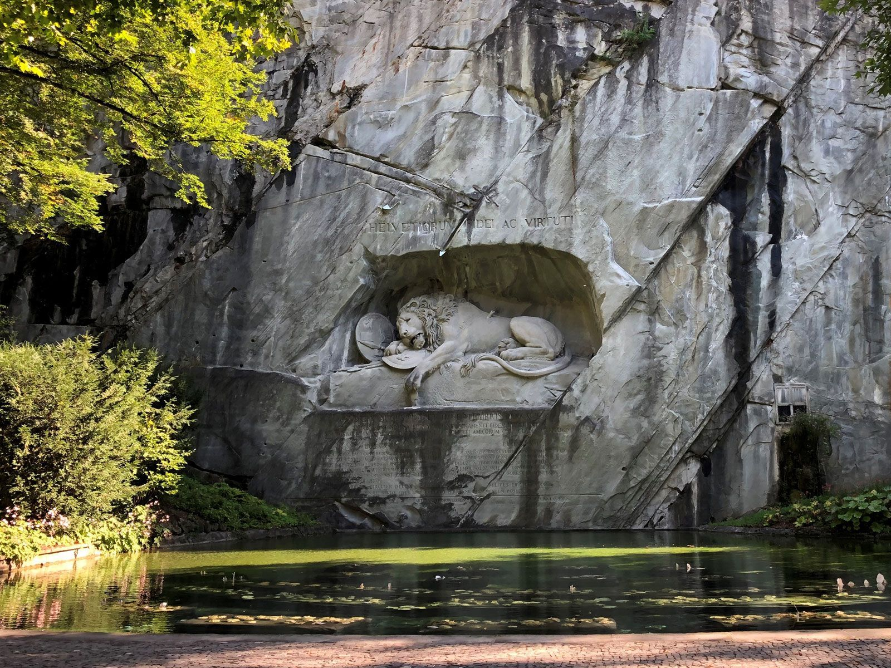
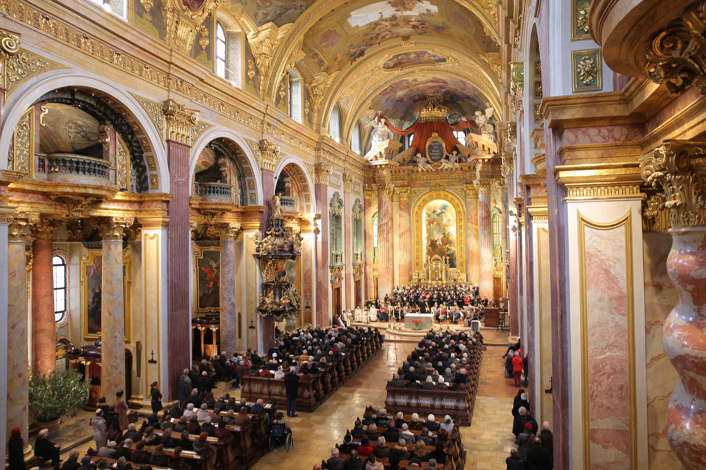
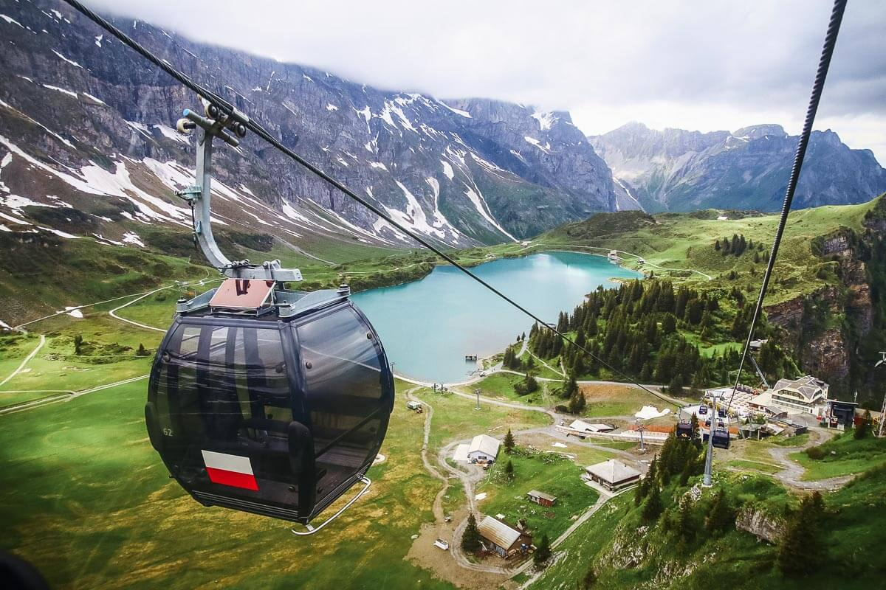

Lucerna é uma das cidades mais pitorescas e históricas da Suíça, situada às margens do Lago dos Quatro Cantões (ou Lago de Lucerna) e cercada por paisagens alpinas.
Principais Atrações:

Ponte da Capela (Kapellbrücke):
Construída em 1333, é a ponte de madeira coberta mais antiga da Europa e o cartão-postal da cidade, famosa pelas pinturas históricas em seu interior e pela Torre da Água octogonal.

Centro Histórico (Altstadt):
Repleto de praças charmosas como o Kornmarkt (onde fica a prefeitura ou Rathaus) e o Weinmarkt, além de prédios com fachadas decoradas por afrescos centenários.

Muralha de Musegg (Museggmauer):
Uma muralha defensiva do século XIV com nove torres acessíveis ao público, oferecendo vistas panorâmicas da cidade.

Monumento do Leão (Löwendenkmal):
Uma escultura impressionante cravada na rocha que homenageia os guardas suíços mortos durante a Revolução Francesa.

Igreja Jesuíta (Jesuitenkirche):
Considerada a primeira grande igreja barroca construída ao norte dos Alpes, datada de 1534.

Passeios e Montanhas:
Serve como base para explorar montanhas icônicas da região, como o Monte Pilatus, o Rigi e o Stanserhorn, através de passeios que combinam barcos a vapor, trens de cremalheira e teleféricos.